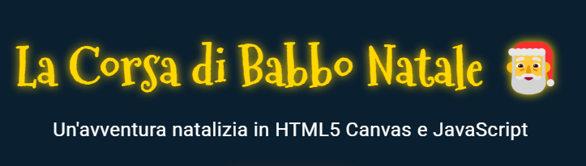

La Corsa di Babbo Natale 🎅
Consegna i regali, schiva il gelo, sconfiggi il Grinch. Un'avventura in HTML5 Canvas nata nel 2024 e riscritta da zero nel 2026 — giocabile qui sotto, in tutte le sue versioni.
Nato con l'AI di prima generazione
La prima versione è stata costruita nel 2024 orchestrando gli strumenti AI dell'epoca: ChatGPT 4 per i prompt e la pianificazione, Stackblitz Bolt per lo scaffolding del progetto e Cursor con Claude 3.5 Sonnet per lo sviluppo del gioco e della presentazione.
- Due versioni desktop (la seconda con il boss Grinch)
- Versione mobile separata con joystick touch
- Sprite SVG procedurali, effetti particellari

edizione 2024Riscritto da zero con Claude Fable 5
L'edizione 2026 non è un aggiornamento: è un motore nuovo. Una sola codebase responsive per desktop e mobile, livelli e nemici definiti come puri dati, boss a fasi con attacchi telegrafati, audio sintetizzato via WebAudio senza un solo file esterno.
- Aggiungere un nemico = una riga di dati
- Object pooling e qualità adattiva alle performance
- Tastiera + joystick touch nella stessa build
Cinque zone, cinque boss
Ogni zona ha la sua palette, le sue decorazioni parallax, la sua tabella di nemici e un boss con fasi che cambiano pattern d'attacco a soglie di vita.
Villaggio Innevato
Grinch Esploratore
Foresta Incantata
Guardiano della Foresta
Città Illuminata
Sindaco di Ghiaccio
Vette Ghiacciate
Colosso delle Vette
Cielo Artico
Il Grinch
Contenuti = dati, comportamenti = registry
Il cuore dell'edizione 2026: i livelli, i nemici, le slitte e i power-up vivono in file di puri dati; i pattern di movimento e di attacco sono piccole funzioni pure in un registry. Bilanciare il gioco significa modificare numeri, non riscrivere logica.
Scegli la tua versione 🎄
Tutte le versioni del gioco, dalla prima del 2024 all'edizione 2026, giocabili qui.
Desktop: frecce/WASD per muoverti, Spazio per sparare, P per la pausa · Touch: joystick a sinistra, fuoco a destra
Ti è piaciuto il viaggio?
Il codice dell'edizione 2026 è open source nel repository del portfolio.